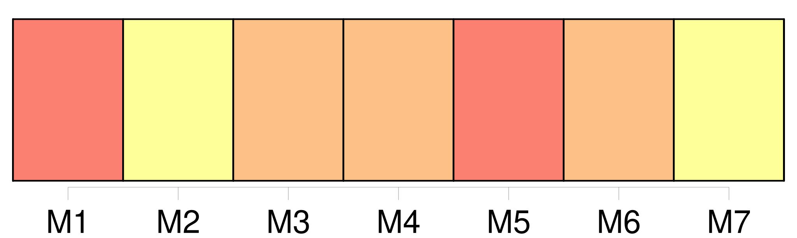
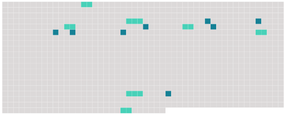

Longueur nb maillons : 15 mentions |
 |
Ils arrivèrent dans un jardin, où deux enfants à l’ air maussade, [un garçon] et une fille, à peu près du même âge que Christophe, semblaient se bouder l’ un l’ autre. [8 phrases]
Comme Christophe commençait à se rassurer un peu, [le petit bourgeois] tomba en arrêt devant lui, et touchant son habit, [il] dit : [1 phrases]
Indigné de cette prétention que son habit fût à [un autre] , il secoua la tête avec énergie, pour nier. – [Je] le reconnais bien peut-être!!
fit [le petit] ; c’ est [mon] vieux veston bleu : il y a une tache là. [1 phrases] Puis, continuant [son] inspection, [il] examina les pieds de Christophe, et lui [demanda] avec quoi étaient faits les bouts de ses souliers rapiécés. [1 phrases] La fillette fit la moue et souffla à [son frère] – Christophe l’ entendit, – que c’ était un petit pauvre. [28 phrases] … Christophe essaya de se relever ; [le petit bourgeois] le poussa et le [fit] retomber ; la fillette lui donna des coups de pied. [4 phrases]
Il s’ arc-bouta sur ses genoux et ses mains, se secoua comme un chien, fit rouler ses persécuteurs ; et, comme ils revenaient à la charge, il fonça la tête baissée sur eux, gifla la petite fille, et jeta d’ un coup de poing [le garçon] au milieu d’ une plate-bande. |
 |
Il est possible de télécharger la ressource sur la page Ortolang |
Si vous avez des questions ou vous voyez des erreurs, merci d'envoyer un mail à silvia.federzoni89@gmail.com |